tv.nu
Strategy Overhaul
Background
tv.nu is Sweden’s largest streaming and linear TV guide with 2 million unique visitors each week. It was founded in 1999 and is today running on iOS, Android and the web.

My Role at tv.nu
Throughtout all the projects at tv.nu, my role as Product design Lead was always in tight collaboration with the product owner, developers, management and the marketing team. I conducted user research and studies, facilitated workshops and brainstorms, created prototypes and specifications, taking ideas from whiteboards to implementation and following up to see what needed to be tweaked. I also managed the CSS for the web version of the app and by doing so, making sure the design was implemented correctly catering for all screens and devices. My work mostly focused on the web platform, where the design source of truth could be established as a reference for the apps as they caught up. Since tv.nu has so many – and so loyal – users it was always important to balance user needs with user expectations and to balance business and marketing goals with usability needs. Any change to the interface would stir up reactions – negative as well as positive.
Challenges
In recent years, tv.nu has faced major challenges trying to move from being simply a linear TV schedule to a modern streaming and TV guide with the main goal to inspire, inform and help users find something good to watch – no matter if it’s linear or streaming content.
A part of the challenge had been to meet the needs of a large and loyal group of traditional users – who visit tv.nu for the linear TV schedule – and to be an attractive guide for users of streaming services at the same time. While the use of linear TV was slowly decreasing in favor of streaming, the traffic to tv.nu’s streaming guides had been surprisingly low.
When I joined tv.nu, the intended strategy was to hide the linear TV schedule and present streaming content up front – to emphasize the new identity of tv.nu as a streaming guide.
Insights
After careful assessments of traffic data from Google Analytics, and learning more about tv.nu’s users, a couple of things became clear:
Like most people, users of tv.nu are creatures of habit and convenience, and the original features of the site had shaped their attention throughout the years. Since 1999 users had regarded tv.nu simply as a linear TV guide, causing a brand stagnation. Also, users effort to avoid getting attention stolen by ads had made their behavioral patterns even narrower. As a result, they did not notice updates and added features. In other words, the major task was to make the streaming guide attractive to users, but also to raise awareness around the fact that it was actually there.
Thus, the streaming guide sections of the site have gone by unnoticed in favor of the temporal aspects of the schedule, and this is where it got interesting.
***Knowing when a title becomes available, and which titles are new – vs knowing where to find titles***
tv.nu was mainly seen as a timetable for films and tv shows. Users expected to find out when a title could be seen, they expected to learn what’s on tonight, what’s new and recommended by trusted sources, whereas streaming content was mainly seen as a guide to where a film or show can be seen.
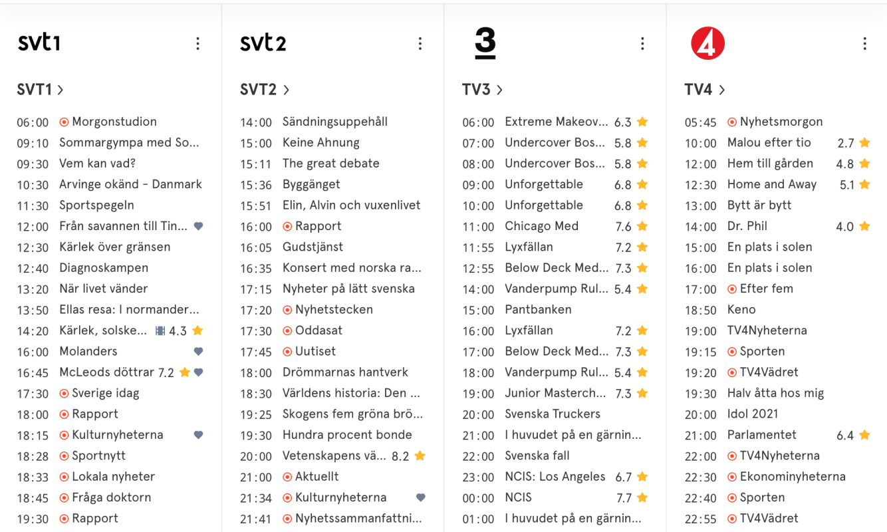 The way tv.nu have presented linear TV content since 1999…
While the need of traditional linear TV was diminishing, the idea of a schedule, a guide to what’s new, was still a very useful and appreciated interface.
To some extent there is a true difference between the “when” aspect of a linear TV guide and the “what” aspect of streaming, but the fact remains that new streaming content will become available at a certain time so the “when” aspect is equally important for streaming as for linear TV.
Finding a third path for the strategy
The planned strategy was discontinued as a result of the data collection, showing that 95% of users stayed on the linear TV schedule (the start page) during their visits to the website and to the mobile apps. If the schedule had been removed from the start page as planned, it would likely have made users annoyed and frustrated and have them end up in a silo, one click away – if they would stay loyal at all. As the initial strategy was challenged, a third solution emerged.
 The start page is all about news, but is also a gateway to all available streaming content
The start page is all about news, but is also a gateway to all available streaming content
The new model proposed two major sections; one that honored the legacy of the timetable aspect of the app, showing the times for upcoming shows and titles, new additions, new trailers and new recommendations – from both linear TV and streaming sources relevant to each user. The other being something of a library, answering the “what” question, as well as giving inspiration and allowing for browsing and serendipity.
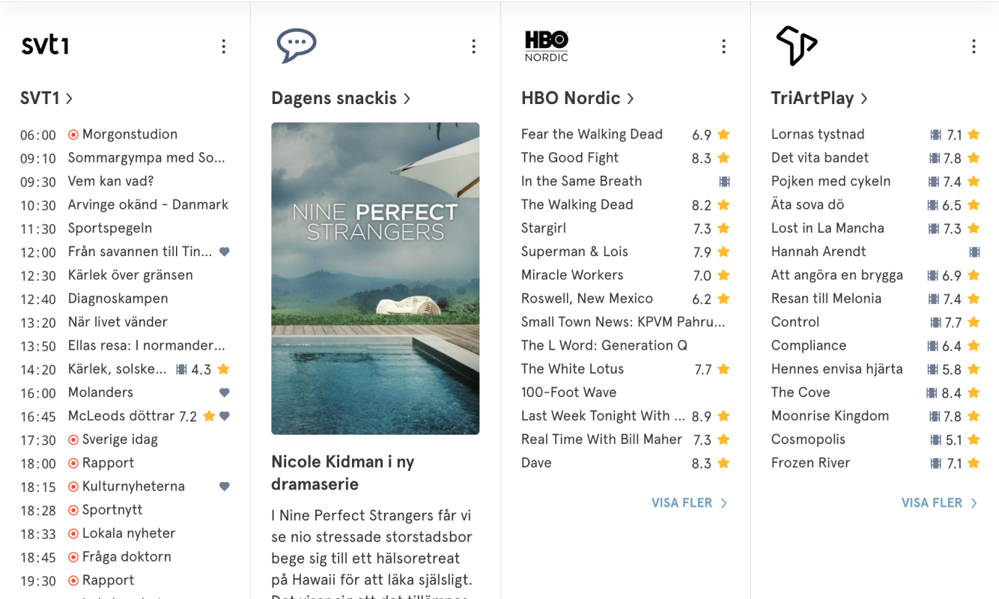 Letting streaming content news enter the start page feed – if the user wants it
Instead of hiding the schedule away, the new model encourages users to build their own timetable by adding channels they are interested in, no matter if the content is served from a linear channel or a streaming provider. In this way, both traditional linear TV watchers and people with multiple streaming services may customize the app to keep track of news on their own channels and providers.
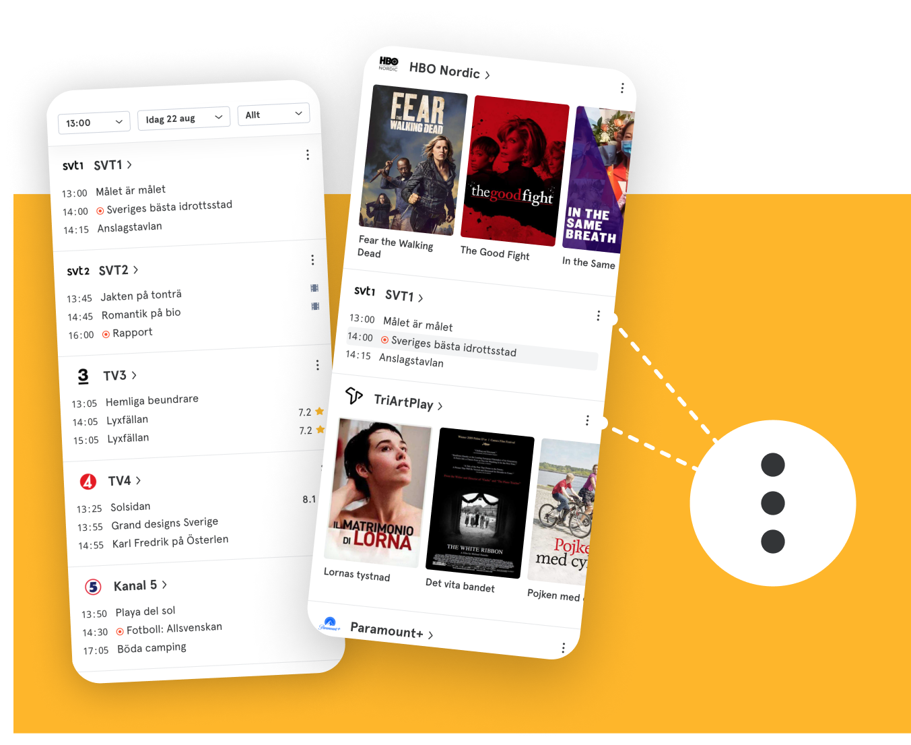 Customizing the start page for linear or streaming or both
Making complex settings easy to use
Being able to personalize tv.nu by selecting TV channels and streaming services had been available as a feature for some time, but as streaming was introduced as a part of the timetable, personalization became more central.
The idea of simply using the start page for channel settings – with drag and drop functionality – was discussed, but rejected since each channel would be too tall to give a good overview of the settings. Instead, a combination of option buttons for each channel on the start page along with a reflection of the whole start page in settings seemed to be the best way forward.
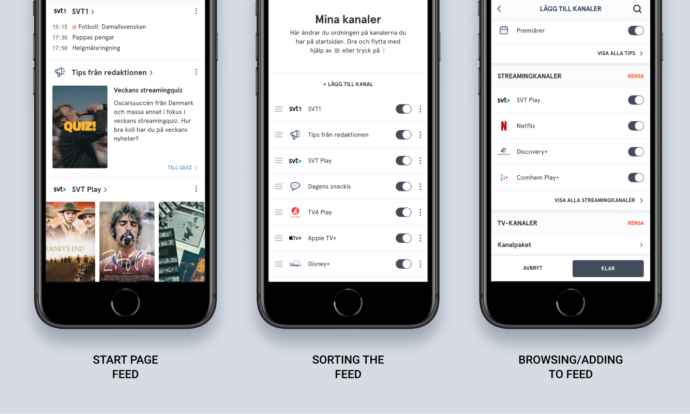 Reflecting the start screen order of channels, linear and streaming.
This work was not just a UI/UX challenge but also a logical and backend challenge since the iOS and Android apps were not yet ready for the introduction of streaming channels. Therefore I had to map out the behavior of the start page if a user would go between the web and the apps, and if changes to the channel order were made.
 Mapping out potential happy- and unhappy paths for settings
Mapping out potential happy- and unhappy paths for settings
User studies before (with prototypes) and after the implementation of the concept were very positive. They both showed that people simply performed the settings and moved on. One negative finding was that users seemed to be too focused on the content of the start page to notice the options button, so we had to address that – more on this later.
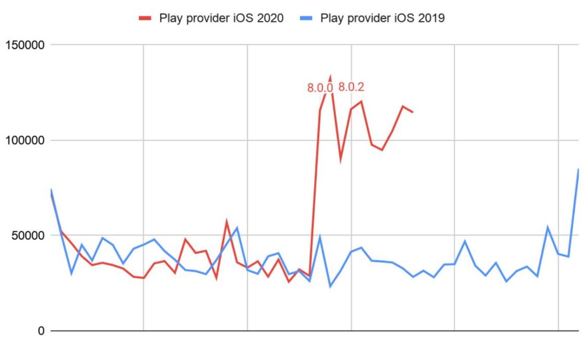 A bump in opened streaming provider pages after launching the Streaming Channels on iOS
When streaming channels were introduced and made available side-by-side with linear TV on the start page, there was an immediate bump in the number of clicked and opened streaming provider pages. Soon the apps caught up and all platforms could introduce the new feature. Furthermore, the percentage of users being aware of tv.nu as a streaming guide started to grow steadily.
Introducing Tips Channels
In order to follow up on this we soon introduced a number of inspirational “tips” channels to provide users with recommendations and popular news – something that studies revealed as central to cater for the convenience aspect. A customizable channel for the user’s favorite shows, a “new trailers” channel, a “Tips from the editor” channel with daily inspiration – to name a few. Traffic for each new addition was closely studied in Google Analytics and tweaked when needed.
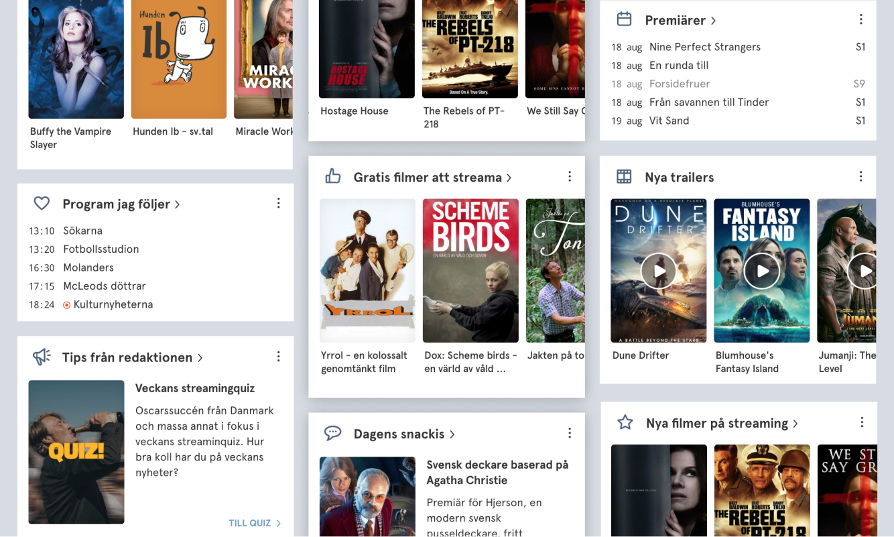
Raising Awareness
A range of user interviews showed a very interesting pattern of user blindness to new features. Being locked on target, and navigating away from ads seemed to be the general behavior of the users I interviewed. A number of ambitious projects were started to raise awareness around the fact that tv.nu was no longer just an old-fashioned TV guide, but breaking through the blindness seemed harder than expected.
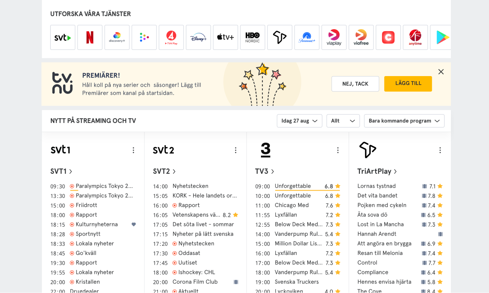 Nudge messages were introduced and tested…
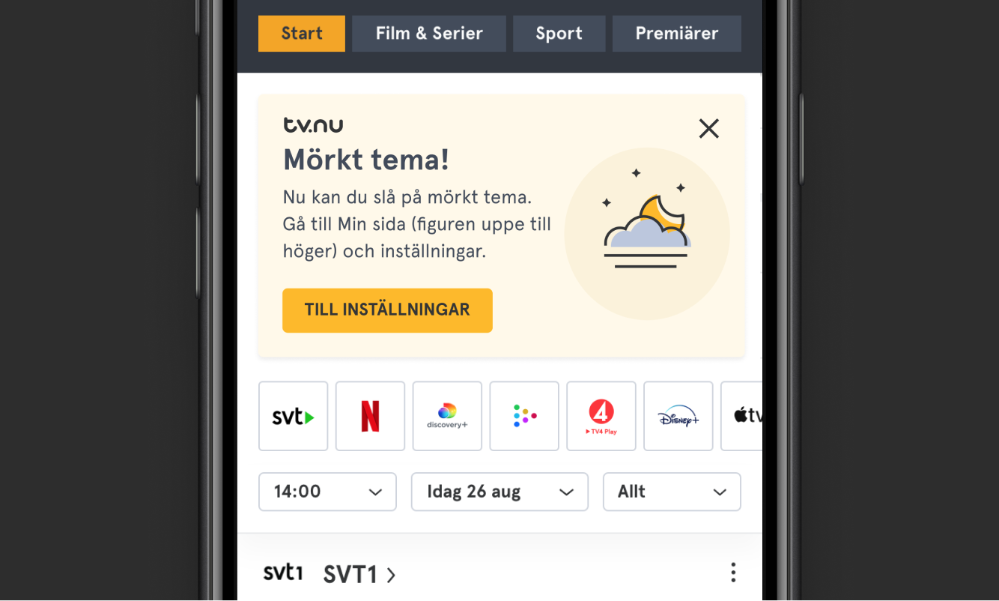 …but breaking through the user blindness was hard.
Nudge messages were introduced and tested in various shapes and forms, but although we used logos, typefaces and styles to make it clear that they were not ad, most users just dismissed them. In short, users came to the app to find something to watch, not to read up on new features or learn about the app itself.
Taking these learnings to heart, my next step was to make something as simple as possible, that would not require people to read or spend time on tutorials or messages, but still grab their attention.
As previously mentioned we had trouble conveying the existence of the options button and I tested my idea on this issue.
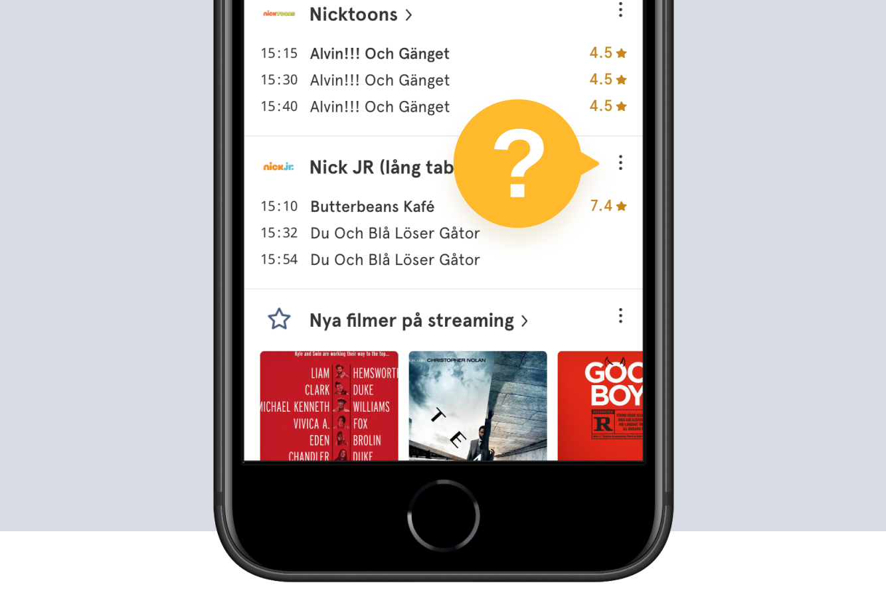 Introducing the “Mysterious Message” to cut through the ad noise
By just showing a speech bubble pointing at the options button, and displaying a big question mark in the center, I wanted users to feel confused and curious at the same time and to provoke them to tap/click it to see what it was all about. As the user did so the modal with channel settings would appear, they would instantly know of its existence, and the speech bubble would go away. The results were very interesting:
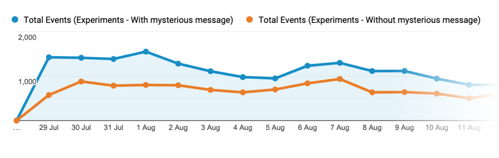 The number of opened options modals nearly doubled as the speech bubble was introduced.
Pivot in Process
Since the settings for personalization lived behind a login wall, one measure for strategy success was the number of logged in users – a number that continuously rises for all the platforms, and gets small bumps as new features are introduced.

***Watchlists, ***
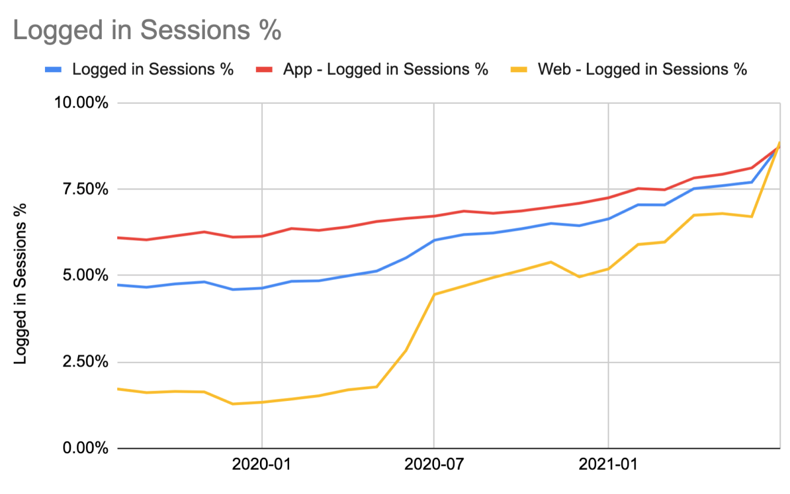 Number of logged in users growing steadily and getting small bumps when new features were introduced
tv.nu
User Interface Projects
Continuous Insights
All projects at tv.nu were coupled with user studies and interviews where I tested features and prototypes, often letting users try and complete certain tasks on their own devices, while I observed everything that happened on the way to the goal; hesitations, missclicks and false assumptions.
When performing studies remotely, the following three steps have proven very successful:
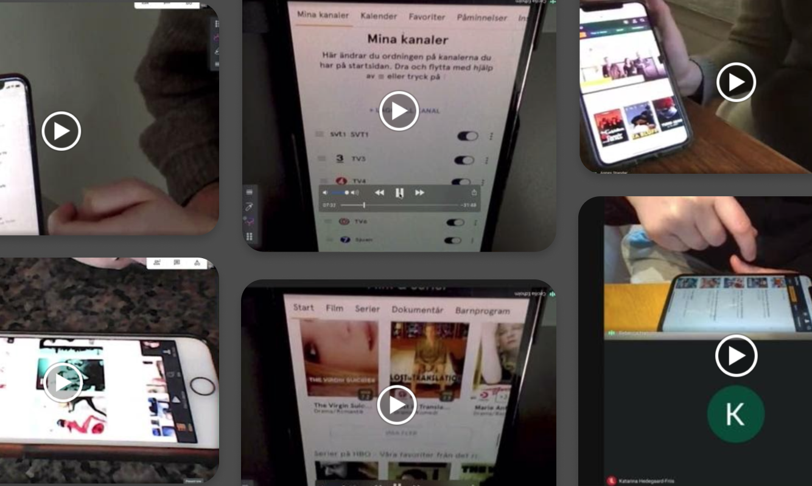 By having users tilt their laptop screens I could monitor the way they interacted with their devices and the UI.
 Writing findings directly into a spreadsheet during the interview. Y-axis: users, X-axis: questions. Color codings: positive and negative remarks.
Writing findings directly into a spreadsheet during the interview. Y-axis: users, X-axis: questions. Color codings: positive and negative remarks.
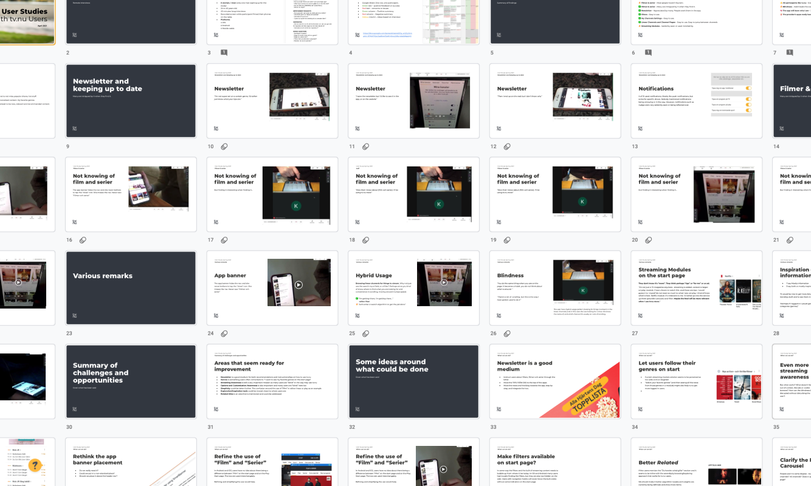 Findings presented along with video snippets as a foundation for workshops and brainstorms
We also conduced a large study with the Human Experience firm Augur, where we intervied people in their home environment, in front of their TVs and screens, to find out how they actually find content to watch. The findings let to a series of experiments that were sketched out, tested, implemented, analyzed, tweaked and taken further.
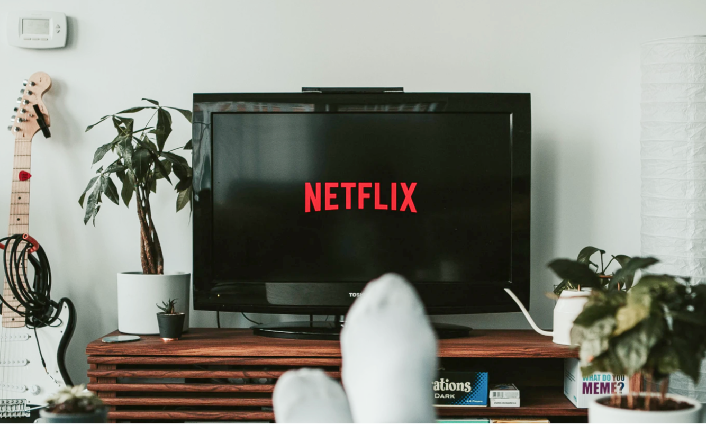 When and where do people stream? And what do they do simultaneously?
Reviews Project
When presented with the possibility to show reviews for films and series I immediately tried to find a way to cater for convenience by rethinking the way reviews are normally displayed in film guides. Conventionally reviews live on a detail view level, but knowing the users of tv.nu, I realized this would not be enough.
Instead, I wanted to see how much more attention the reviews would get if they were introduced on a browsing level. Therefore we added a side section for the review on the existing carousel and list items.
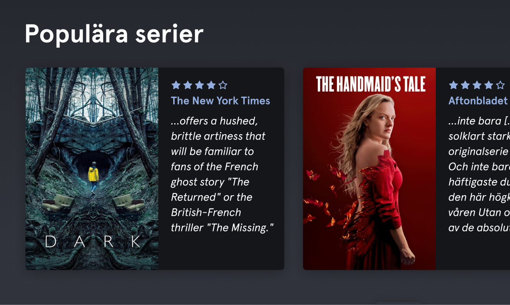 A somewhat unconventional way of displaying reviews
We realised measuring the number of clicks would not be useful in a situation like this, since reading a review could make the user go either way; getting more interested, or less interested. So instead we decided to set up a questionnaire as we launched the feature. In it we asked whether users found the newly added reviews useful.
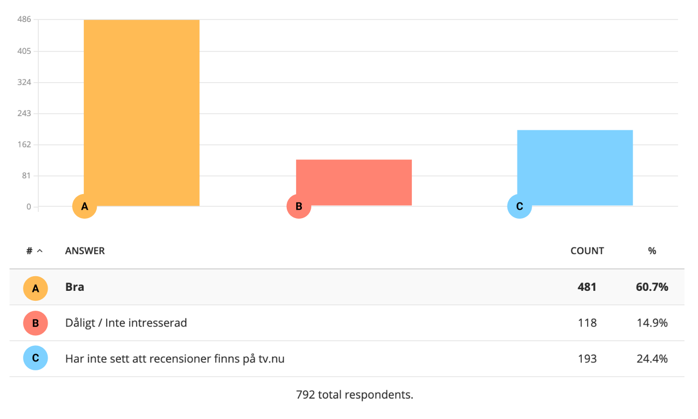 60,7% liked the reviews, 14,9% disliked/were not interested, 24,4% had not seen them.
While the results were positive with a large majority saying they did find them useful, we also got to find out that they were fairly easy to spot – possibly due to the placement on a browsing level. Had they not been there, the results would arguably show more “I have not seen them” answers.
Filter Project
An important part of successfully integrating the linear and the streaming guide was consistency – making the user feel at home in all parts of the website and apps. If the user could recognize the UI elements from one page to the next the threshold would be much smaller to start exploring all parts of the service. Thus, introducing coherent filters on all pages was a crucial step in this direction. While doing this we reviewed all the relevant data we could extract around movies and series. What did we need to show at a minimum, and what was lacking? This project is in no way finished – there are still many interesting bits of metadata and ways to give users recommendations to be explored and added – but the foundation for a solid UI has been laid out. User studies showed no indications of the opposite.
 Filters for digging out movies from the mid-70s and 80s with IMDb between 6 and 9 from a specific set of services, sorted by IMDb-rating. For instance.
Filters for digging out movies from the mid-70s and 80s with IMDb between 6 and 9 from a specific set of services, sorted by IMDb-rating. For instance.
Feed Project
When I joined tv.nu, streaming content was presented with hand-made collections or lists filtered by popularity. While collections can spark a lot of interest they are time-consuming to make and can sometimes be too subjective. Filtering by popularity alone gives a very broad and undefined set of data. So we realized there was a need to improve this presentation.
Since interviews and studies showed such high demand for convenience, we wanted to give users a way to browse content by areas of interest. By taking inspiration from the way many streaming services present their content, we introduced a feed for each streaming provider, as well as a general feed covering all providers relevant to each user.
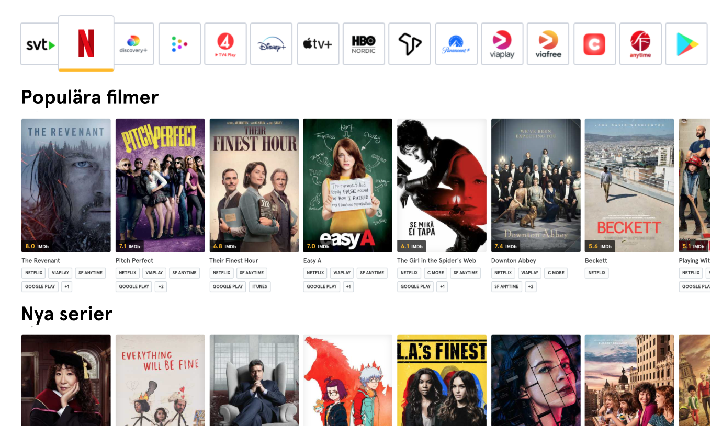 Popular Movies, New Series, New Episodes, Movies with IMDb over 7, Action Series from Netflix, Best movies from the 70s, etc – all in one feed.
By building a tool for programmatically creating feed lists and tracking them with Google Analytics we suddenly had a useful “control room” for which types of lists were most popular, and we could thus tweak the content presentation accordingly.
tv.nu
Graphic Design Projects
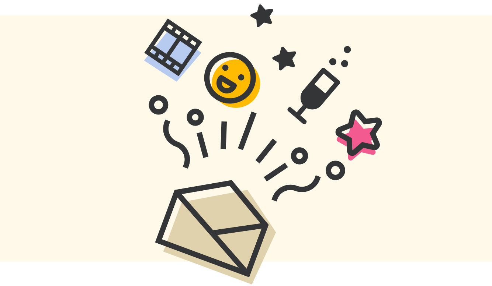
Modernizing the brand
As I joined tv.nu, all platforms faced a lot of UI challenges as they were inconsistent within themselves and contained great deal of “design debt” – previous graphic design projects had simply not been completed before others were started. tv.nu understood this and had decided to modernize the brand.
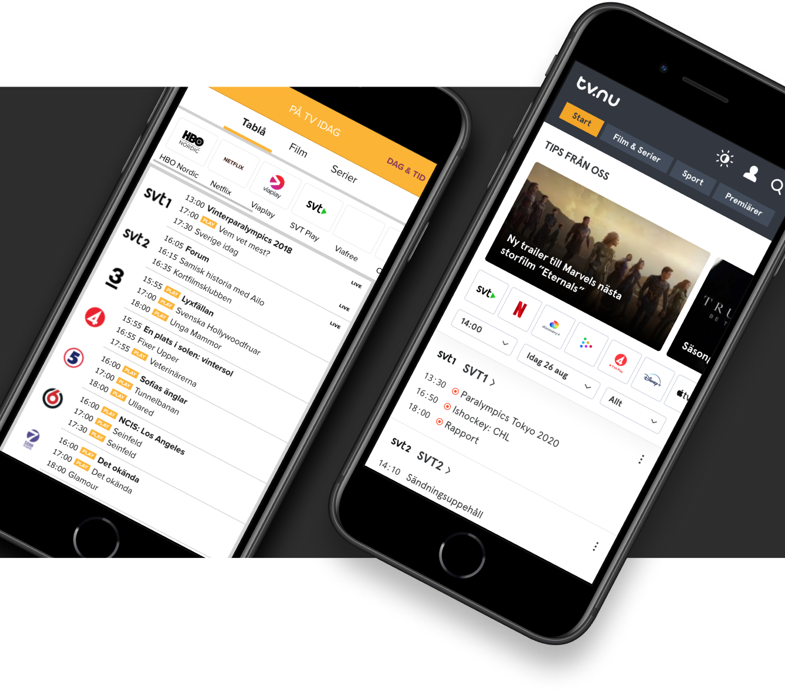 From the old linear schedule (on the left) to a new version on the right that includes streaming and recommendations. Items are separated to be able tap into detail view directly.
The logo and brand colors had just been updated and the UI needed to reflect this shift. On the checklist were issues such as coherency across components as well as letting the apps speak the same brand language, reducing the number of components doing the same thing and to create a design system to simplify further implementation.
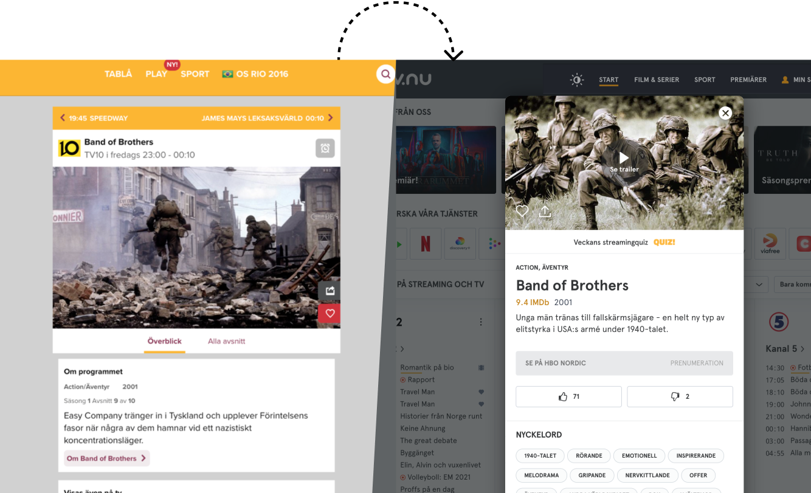 Old design on the left, new design to the right with detail pages opened in context instead of directing to new page.
Legibility
A fairly low-hanging fruit was tackling the poor legibility in headers. Previous efforts had prioritized a strict use of brand colors which rendered failing contrast tests:
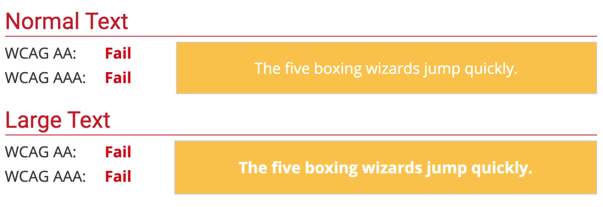
By promoting a dark and rather unsaturated shade of blue that went well with the brand colors the yellow color was allowed step down from its prominent position. Instead, it became prominent in a more useful way – as an signal color for selected areas.

Moving away from the old brand…
…to the new, with stronger color contrasts and more clearly defined graphic elements
Multitenancy Project
The Norwegian magazine VG needed to modernize their linear TV guide and make the same transition tv.nu and decided to team up after seeing the new design.
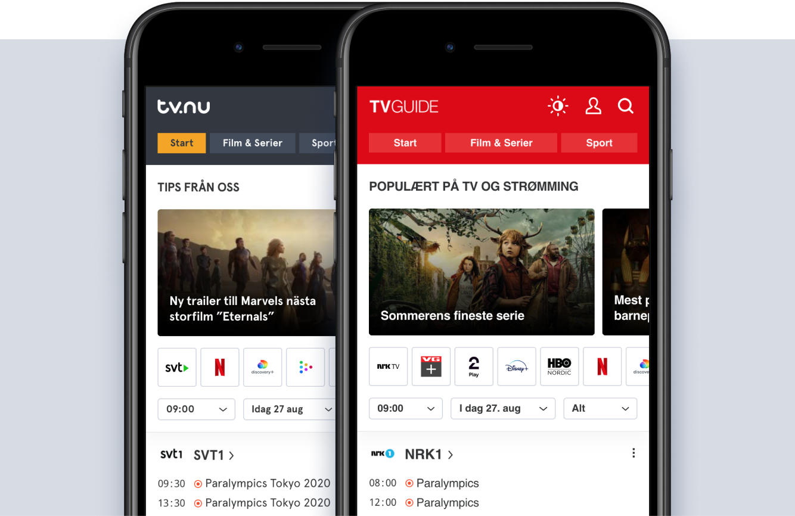
This turned tv.nu into a multitenancy platform that put higher demands on design and development to tighten up the overall consistency. By pinpointing the least amount of changes that were needed to express the style of each brand – we created an even more flexible design system that could cater for both.
Dark Mode Project
Dark mode had been a feature that many users asked for. Most streaming guides use a dark background as default, and they do so for a reason. The normal use case of a guide – in front of a TV, often late in the evening, after the work day is done – does not go well with a bright white screen burning the eyes. However, since tv.nu presents a lot of information in text-based lists (the linear schedules), a sudden switch from a light to a dark UI mode would not only be popular.
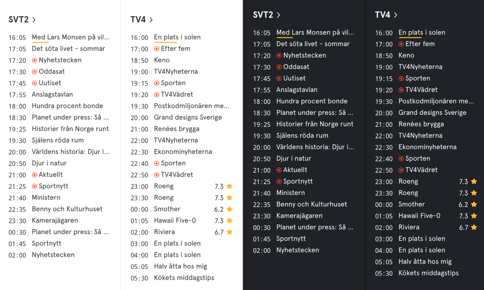
But to really get users to tell us how they felt about this, we decided to make a one-day switch to dark mode before going back to light. The online questionnaires we then posted gave a massive response of around 3500 respondents, and like we suspected light mode was preferred by the majority of the respondents, but we were surprised to see that dark mode was just slightly less popular. Almost half of the respondents preferred dark mode so we decided to use a switch component, letting users chose, instead of just turning the UI dark.
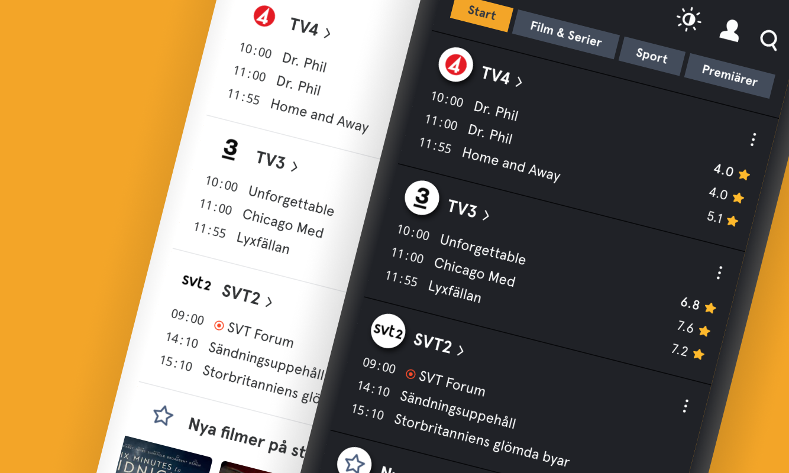
Cleaning Projects
At a certain point in time all color and typography handling needs to be refactored. As new features were introduced in the projects, so were new font and color definitions – which eventually led to bloated code and design systems that got harder and harder to use in a consistent way.
As I tackled the issues with typography, trying to reduce the number of fonts to a minimum I used a simple but efficient way of pinpointing all the different instances of a specific font mixin. By setting a unique and arbitrary color to each one I could right away see if there were instances falling outside of the scope, and the hunt for stray stylings became frustration-free.
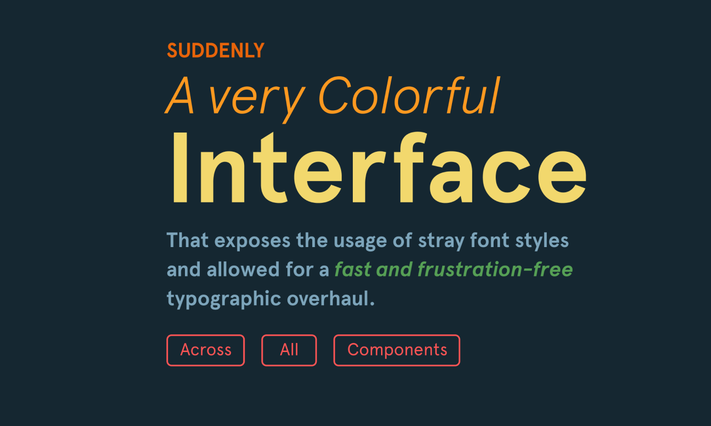
The same principle could be used when finding small and unnecessary variations in color definitions. For example; when tracking down all versions of yellow – that should use the same hexadecimal code – I could set the specific color variable to neon green instead. Any yellow found in the interface was then a stray style that needed to be adjusted.